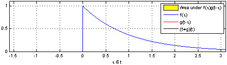

FIXME: diagram of human vision/artistry
A Guide to Computer Vision
… and its applications in traffic analysis
Rich Wareham, University of Cambridge
The Aim of this Talk
The Basics
The basic idea
The basic idea
FIXME: diagram of computer vision/rendering
The Basics
Filters
Pixel-to-pixel transform
Example: image gradent
Detector
Pixel-to-shape transform
Example: contour finding
Template Matching
Example: shape matching
The Tools
- OpenCV — Turn-key implementations of most `standard' algorithms
- Python — The universal `glue' language
- IPython web notebook — A scientist-friendly interface to Python
- NumPy/SciPy — Number-crunching library for Python
IPython demo
Example: ANPR
Automatic Number Plate Recognition
import cv2
im = cv2imread('number-plate.jpg')
import numpy as np # Create an entirely yellow image yellow = np.ones(im.shape) yellow[:,:,0] = 209 # red yellow[:,:,1] = 169 # green yellow[:,:,2] = 11 # blue # Compute difference diff = np.abs(yellow - im)
# Destaurate by taking the mean of each colour desat = np.mean(diff, axis=2)
desat_inv = 255 - desat
desat_thresh = np.where(desat_inv > 200), 1, 0)
eroded = cv2.erode(cropped)
# Extract connected regions as vector contours segment_contours = cv2.findContours( eroded, cv2.RETR_CCOMP, cv2.CHAIN_APPROX_SIMPLE )
Aside: Dutch number plate
Feature detection
Fourier transform, wavelets and complex numbers, oh my!
Convolution


Fourier Transform

Feature detection in video images
Polar matching

Descriptor matching in video
Perspective warping
Here comes the science bit, concentrate!
Perspective transformation
General case
Map 3d co-ordinate $[x, y, z]$ to 2d co-ordinate $[X, Y]$
$$ \underbrace{\begin{bmatrix} XW \\\\ YW \\\\ W \end{bmatrix}}_{3 \times 1} = \underbrace{P}_{3 \times 4} \underbrace{\begin{bmatrix} x \\\\ y \\\\ z \\\\ 1 \end{bmatrix}}_{4 \times 1} $$
Perspective transformation
Planar case
If source is a plane, without loss of generality we can ignore $z$
$$ \begin{bmatrix} XW \\\\ YW \\\\ W \end{bmatrix} = \underbrace{\begin{bmatrix} a & d & g \\\\ b & e & h \\\\ c & f & 1 \end{bmatrix}}_{\mbox{8 unknowns}} \begin{bmatrix} x \\\\ y \\\\ 1 \end{bmatrix} $$
$$ \underbrace{\begin{bmatrix} x_1 & 0 & -x_1X_1 & y_1 & 0 & -y_1X_1 & 1 & 0 \\\\ 0 & x_1 & -x_1Y_1 & 0 & y_1 & -y_1Y_1 & 0 & 1 \\\\ x_2 & 0 & -x_2X_2 & y_2 & 0 & -y_2X_2 & 1 & 0 \\\\ 0 & x_2 & -x_2Y_2 & 0 & y_2 & -y_2Y_2 & 0 & 1 \\\\ x_3 & 0 & -x_3X_3 & y_3 & 0 & -y_3X_3 & 1 & 0 \\\\ 0 & x_3 & -x_3Y_3 & 0 & y_3 & -y_3Y_3 & 0 & 1 \\\\ x_4 & 0 & -x_4X_4 & y_4 & 0 & -y_4X_4 & 1 & 0 \\\\ 0 & x_4 & -x_4Y_4 & 0 & y_4 & -y_4Y_4 & 0 & 1 \\\\ \end{bmatrix}}_{A} \underbrace{\begin{bmatrix} a\\\\b\\\\c\\\\d\\\\e\\\\f\\\\g\\\\h \end{bmatrix}}_{\vec{v}} = \underbrace{\begin{bmatrix} X_1\\\\Y_1\\\\ X_2\\\\Y_2\\\\ X_3\\\\Y_3\\\\ X_4\\\\Y_4 \end{bmatrix}}_{\vec{u}} $$
Planar homography
Find transform coefficients from image co-ordinates and template co-ordinates
$$ \vec{v} = A^{-1} \vec{u} $$
Homography: an example
WebGL perspective transformation (JSFiddle)
Joining it all together
Thanks for watching
Slides available at rjw57.github.io/cv-intro
g+
gplus.to/richwareham
email
rjw57@cam.ac.uk
github
github.com/rjw57